Sistemas Operativos y Configuración de Red
Diagrama de Red
A continuación, se presenta el diagrama de la infraestructura de red diseñada:
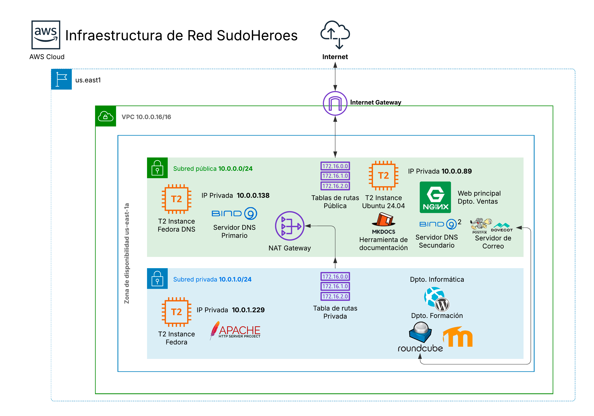
Infraestructura en AWS
Nuestra infraestructura está alojada en la nube de AWS dentro de una VPC, la cual está dividida en dos subredes:
- Subred Pública (10.0.0.0/24): Contiene los servidores accesibles desde internet.
- Subred Privada (10.0.1.0/24): Contiene servidores internos sin acceso directo a internet.
AWS proporciona los servicios necesarios para la gestión del tráfico entre subredes y hacia el exterior, por lo que no es necesario contar con una máquina dedicada como router. En su lugar, se utilizan las herramientas nativas de AWS, como las tablas de rutas y las gateways de internet y NAT. Además, AWS proporciona un acceso seguro a las máquinas mediante SSH, RDP y SFTP, utilizando claves para garantizar la autenticación y la integridad de las conexiones remotas.
Servidores y Funcionalidad
Subred Pública
- Servidor DNS Primario (Fedora): Encargado exclusivamente del servicio de resolución de nombres mediante BIND.
-
IP privada:
10.0.0.138 -
Servidor Web, Correo y DNS Secundario (Ubuntu 24.04):
- Funciona como respaldo del servidor DNS primario.
- Aloja un servidor web Nginx con la web principal y la web del departamento de ventas.
- Implementa un servidor de correo basado en Postfix y Dovecot.
- Ejecuta MkDocs para la gestión y publicación de documentación en GitHub Pages.
-
IP privada:
10.0.0.89 -
Cliente Windows Server 2025:
- Se utiliza para visualizar y probar todas las aplicaciones que requieren una interfaz gráfica.
- Está alojado en la subred pública.
Subred Privada
- Servidor de Aplicaciones y Formación (Fedora):
- Ejecuta un servidor web Apache con VirtualHosts para los departamentos de informática y formación.
- En el departamento de informática aloja un sitio WordPress.
- En el departamento de formación gestiona Moodle como plataforma educativa.
- Implementa un servicio de webmail Roundcube, el cual se conecta con el servidor de correo alojado en la subred pública.
- IP privada:
10.0.1.229
Configuración de Red
Para garantizar la comunicación entre las máquinas, se han establecido las siguientes configuraciones:
- Internet Gateway y NAT Gateway: Permiten el acceso a internet de las instancias en la subred pública y facilitan la conectividad de la subred privada a internet sin exponerla directamente.
- Tablas de Rutas: Se han definido rutas para la comunicación entre las subredes y la conexión externa.
- Configuración de DNS: Se ha implementado un sistema de resolución de nombres interno para gestionar los dominios de la infraestructura.
Esta configuración servirá como base para la correcta implementación de los servicios de red en fases posteriores del proyecto.
Creación de la VPC y Subredes en AWS
En esta documentación se detallará paso a paso el proceso de creación de la VPC y la configuración de las subredes en AWS.
1. Creación de la VPC
Accedemos a la consola de AWS y nos dirigimos al servicio VPC.
Hacemos clic en Crear VPC y completamos los siguientes datos:
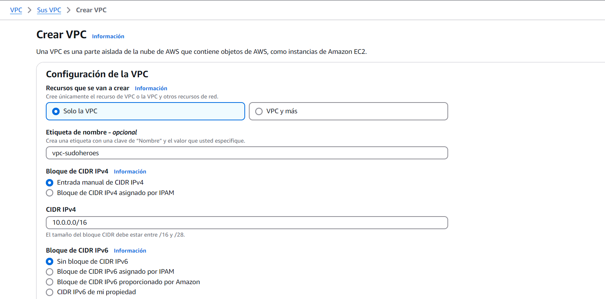
Guardamos la configuración y verificamos que la VPC ha sido creada correctamente.
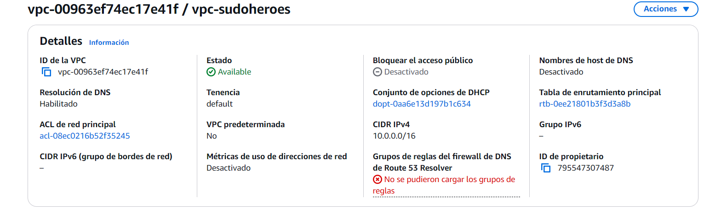
2. Creación de Subredes
Subred Pública
Dentro del servicio de VPC, vamos a Subredes y hacemos clic en Crear subred.
Completamos los siguientes campos:
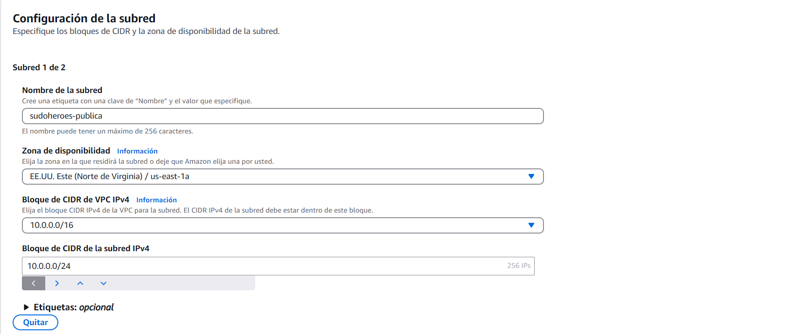
Guardamos la configuración.
Subred Privada
Repetimos el proceso anterior, pero con los siguientes datos:
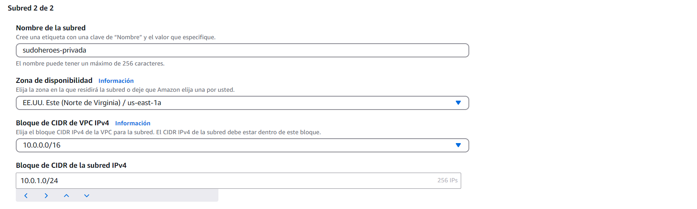
Guardamos la configuración y verificamos su creación.
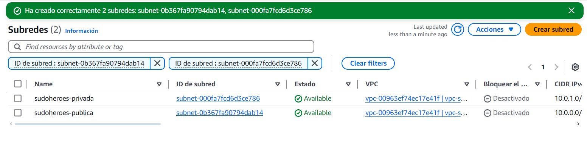
3. Configuración del Internet Gateway
Vamos a Gateways de Internet dentro de VPC y hacemos clic en Crear Gateway de Internet.
Le damos el nombre SudoHeroes-IGW y confirmamos la creación.
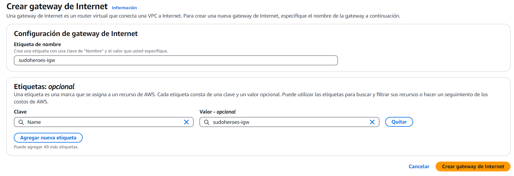
Asociamos el Internet Gateway a la VPC vpc-sudoheroes.
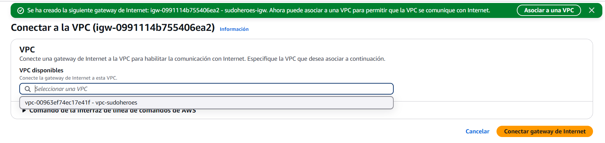
4. Configuración de las Tablas de Rutas
Tabla de rutas de la subred pública
En Tablas de Rutas, seleccionamos la tabla de rutas creada automáticamente para la VPC.
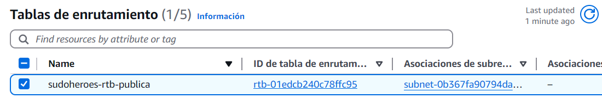
Agregamos una nueva regla:
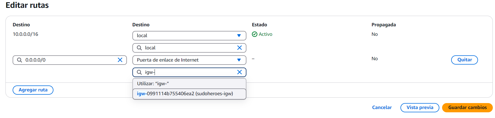
Guardamos la configuración.
Tabla de rutas de la subred privada
Creamos una nueva NAT Gateway en la subred pública con una IP elástica asignada.
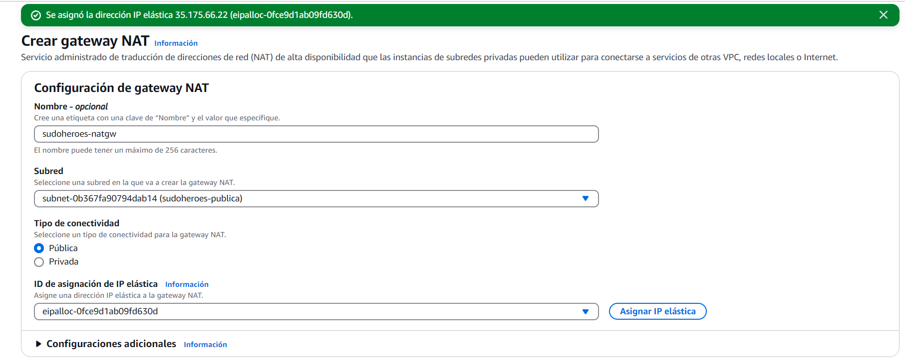
Creamos una nueva tabla de rutas y la asociamos a la subred privada.
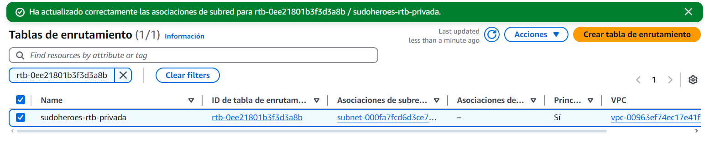
Agregamos una nueva regla:
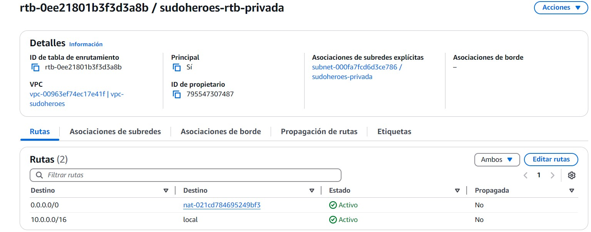
Guardamos la configuración.
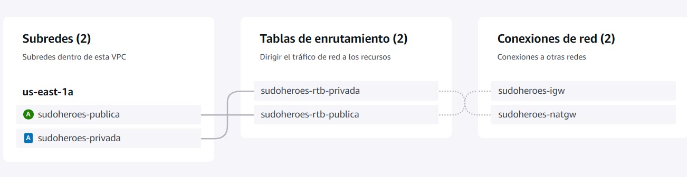
Esta documentación describe detalladamente el proceso de creación y configuración de la VPC y sus subredes en AWS.
Creación de Instancias en las Subredes de AWS
En esta documentación se describe paso a paso el proceso de creación y configuración de las instancias dentro de las subredes pública y privada de la VPC en AWS.
1. Creación de la Instancia Fedora (Servidor DNS Primario) en la Subred Pública
Accedemos a la consola de AWS y vamos al servicio EC2.
Hacemos clic en Lanzar Instancia y configuramos lo siguiente:
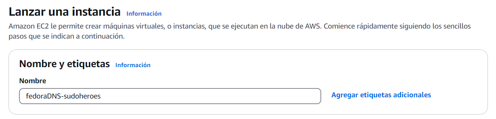
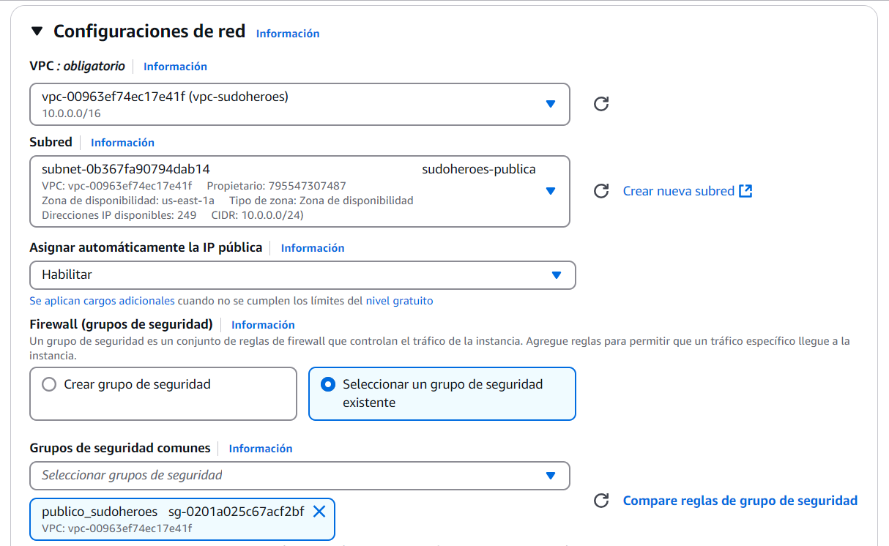
Generamos o usamos un par de claves para acceder a la instancia.
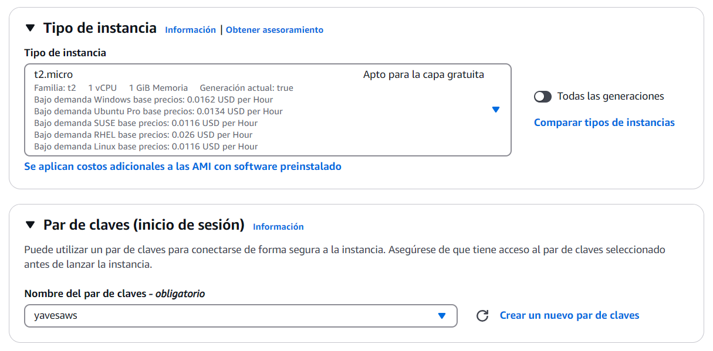
Le asignamos una IP elástica.
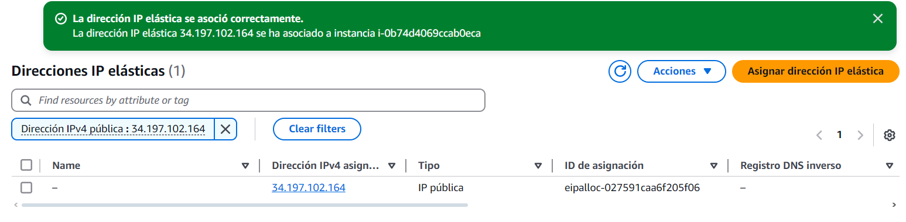
Comprobamos su conectividad.
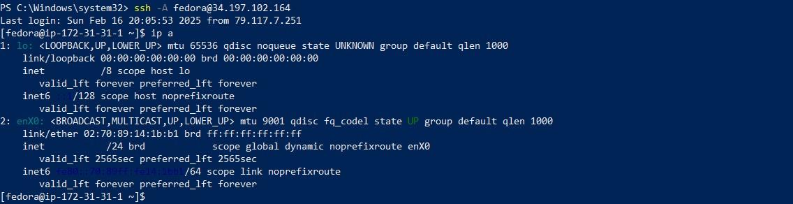
2. Creación de la Instancia Ubuntu (Servidor Web y Correo) en la Subred Pública
Repetimos el proceso anterior con las siguientes configuraciones:
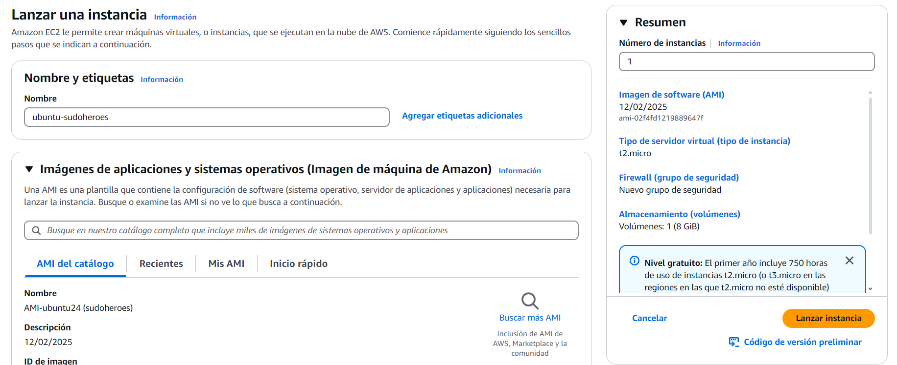
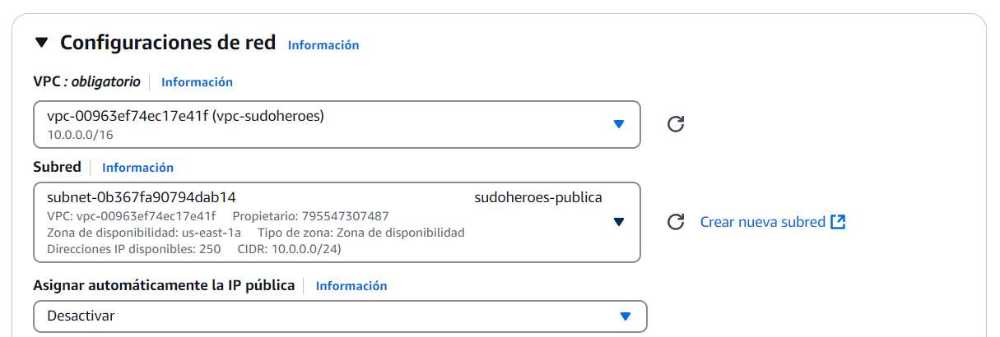
Le asignamos una dirección IP elástica.
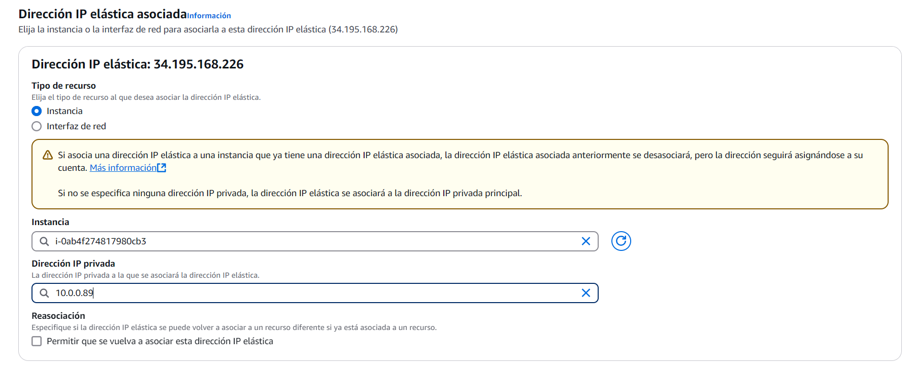
Comprobamos su conectividad.
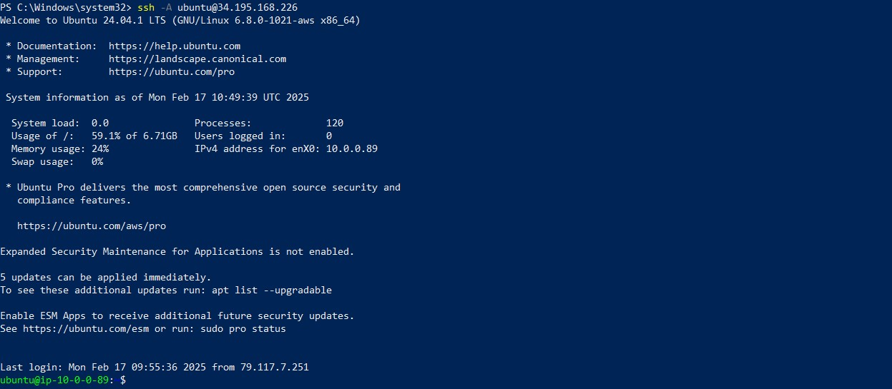
3. Creación de la Instancia Fedora (Servidor de Aplicaciones y Formación) en la Subred Privada
Lanzamos una nueva instancia con las siguientes configuraciones:
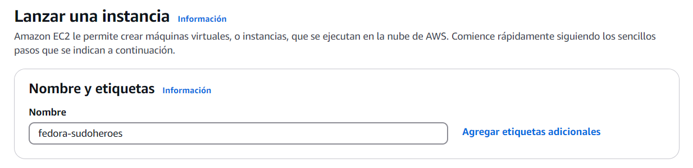
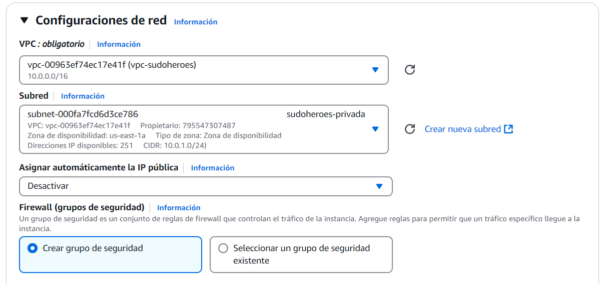
Para permitir la conexión SSH desde la subred pública, configuramos una conexión a través de una máquina puente.
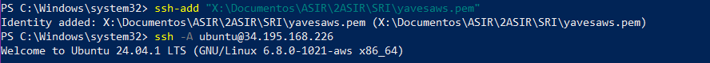
Ahora nos podremos conectar a Fedora (interna) mediante SSH con Ubuntu y Fedora (externa), así como podemos acceder a sus servicios gráficos con la máquina Windows que vamos a crear a continuación.
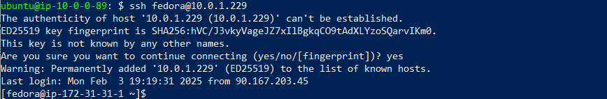
4. Creación de la Instancia Windows Server 2025 (Cliente) en la Subred Pública
Creamos una nueva instancia con la siguiente configuración:
- Nombre:
Cliente-Windows - Sistema Operativo: Windows Server 2025
- Subred:
Subred-Publica - Habilitar IP pública: Sí
- Grupo de seguridad: Permitimos RDP (3389).
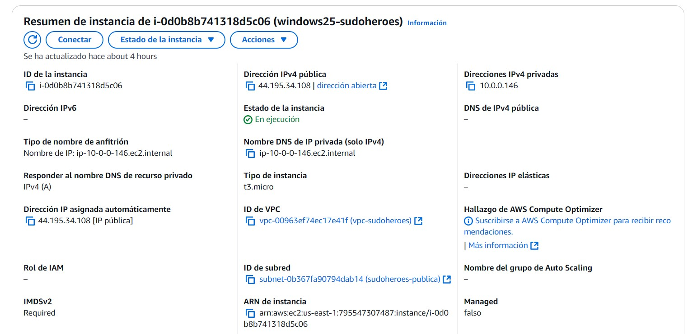
Configuramos credenciales de acceso y verificamos conectividad.
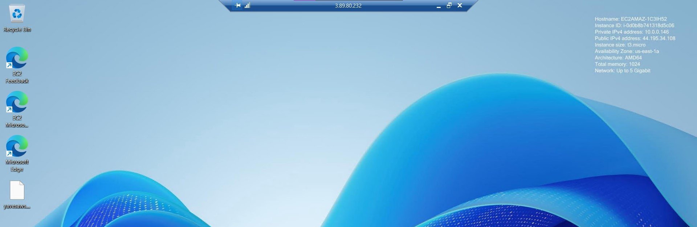
5. Grupos de seguridad
Configuraremos los grupos de seguridad acorde con los servicios de los que precisaremos durante el reto.
Subred Pública
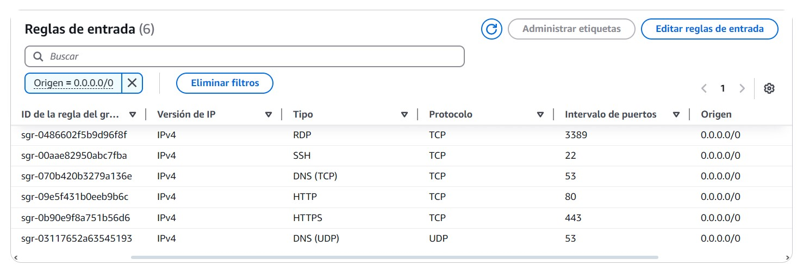
Subred Privada
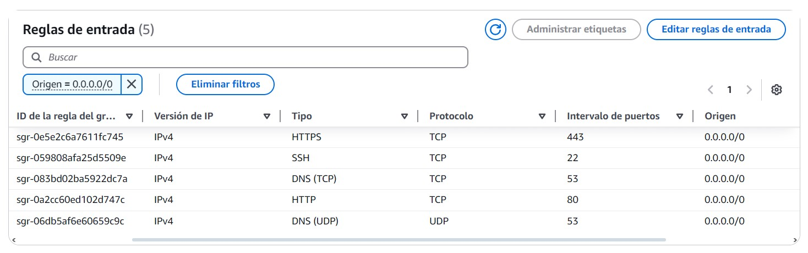
Esta configuración garantiza que cada instancia esté correctamente desplegada y conectada dentro de la infraestructura de AWS.